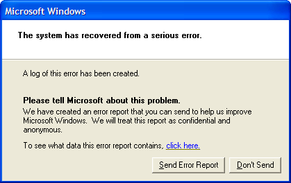

Two really simple things Microsoft can do to make Windows more secure against NSA
Thanks to Edward Snowden and journalists at Der Spiegel, today we learned about Tailored Access Operations (TAO), NSA’s world-class hacking team. There was a lot of interesting information in that article (like how they divert shipping of electronics to a secret warehouse where they can modify it to install backdoors!).
But I’m just going to talk about how they use Microsoft error reports to gather private information about Windows computers that can be used to compromise their security — a problem that’s trivially easy for Microsoft to fix.
You know how Windows programs crash all the time? In order to make that happen less, Microsoft collects information about the crash. They want to know what program crashed and what the current state of your computer is so that they can uncover the bug that you triggered and hopefully fix it in a future update. You can read more about exactly what data gets collected and how Microsoft “protects” this data by reading their Microsoft Error Reporting Service privacy policy.

Because Microsoft doesn’t use freely available and widely used security and privacy technology, these error reports can be used against Windows users. From the Spiegel article:
One example of the sheer creativity with which the TAO spies approach their work can be seen in a hacking method they use that exploits the error-proneness of Microsoft’s Windows. Every user of the operating system is familiar with the annoying window that occasionally pops up on screen when an internal problem is detected, an automatic message that prompts the user to report the bug to the manufacturer and to restart the program. These crash reports offer TAO specialists a welcome opportunity to spy on computers.
When TAO selects a computer somewhere in the world as a target and enters its unique identifiers (an IP address, for example) into the corresponding database, intelligence agents are then automatically notified any time the operating system of that computer crashes and its user receives the prompt to report the problem to Microsoft. An internal presentation suggests it is NSA’s powerful XKeyscore spying tool that is used to fish these crash reports out of the massive sea of Internet traffic.
The automated crash reports are a “neat way” to gain “passive access” to a machine, the presentation continues. Passive access means that, initially, only data the computer sends out into the Internet is captured and saved, but the computer itself is not yet manipulated. Still, even this passive access to error messages provides valuable insights into problems with a targeted person’s computer and, thus, information on security holes that might be exploitable for planting malware or spyware on the unwitting victim’s computer.
Although the method appears to have little importance in practical terms, the NSA’s agents still seem to enjoy it because it allows them to have a bit of a laugh at the expense of the Seattle-based software giant. In one internal graphic, they replaced the text of Microsoft’s original error message with one of their own reading, “This information may be intercepted by a foreign sigint system to gather detailed information and better exploit your machine.” (“Sigint” stands for “signals intelligence.”)
So how could Microsoft easily prevent this from happening? They can do these two things:
Use HTTPS!
There’s no reason why any piece of software that needs to communicate back to its company’s servers shouldn’t use HTTPS instead of HTTP. It’s not hard to set up or maintain, it’s not expensive, it scales really well. It’s ridiculous that Mirosoft, the largest software company in the world, still uses HTTP for anything.
If they were using HTTPS, NSA would have to compromise the SSL key or do active man-in-the-middle attacks to get these error reports (and even man-in-the-middle attacks could be prevented with certificate pinning). However, just using HTTPS isn’t quite enough. Even if the error reports are encrypted, NSA can still force Microsoft to hand over their error report database.
Use Tor!
Windows, and every other operating system, should come with Tor installed. When software wants to send “anonymous error reports,” or “anonymous usage data to improve our service,” or anything else like that, they should actually make it anonymous by proxying those requests through the Tor network.
If Tor is installed, other software should use it to send anonymous data back home too. Firefox and Chrome should send error reports and usage data to Mozilla and Google over Tor instead of over the normal Internet. Ubuntu’s Unity should send “anonymous” Dash search results to productsearch.ubuntu.com over Tor, or else they can’t truly claim that they’re anonymous.
These technologies are freely available, widely used, and open source. It’s time that companies start acting like everything that happens on the Internet is being spied on.


Legacy comments, imported from previous version of this blog:
anaal neuken
April 19, 2014 07:14 AM
It's not my first time to pay a visit this website, i am browsing this website dailly and take nice facts from here daily.
www.youtube.com
August 6, 2014 01:10 AM
What's Taking place i'm new to this, I stumbled upon this I have found It positively helpful and it has helped me out loads. I am hoping to give a contribution & assist different customers like its helped me. Good job.